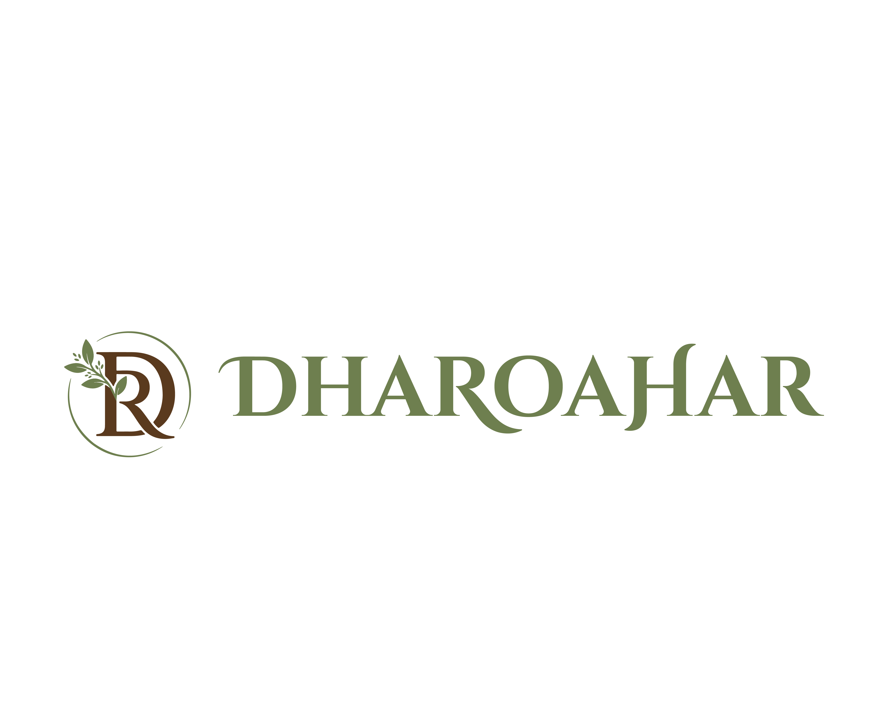
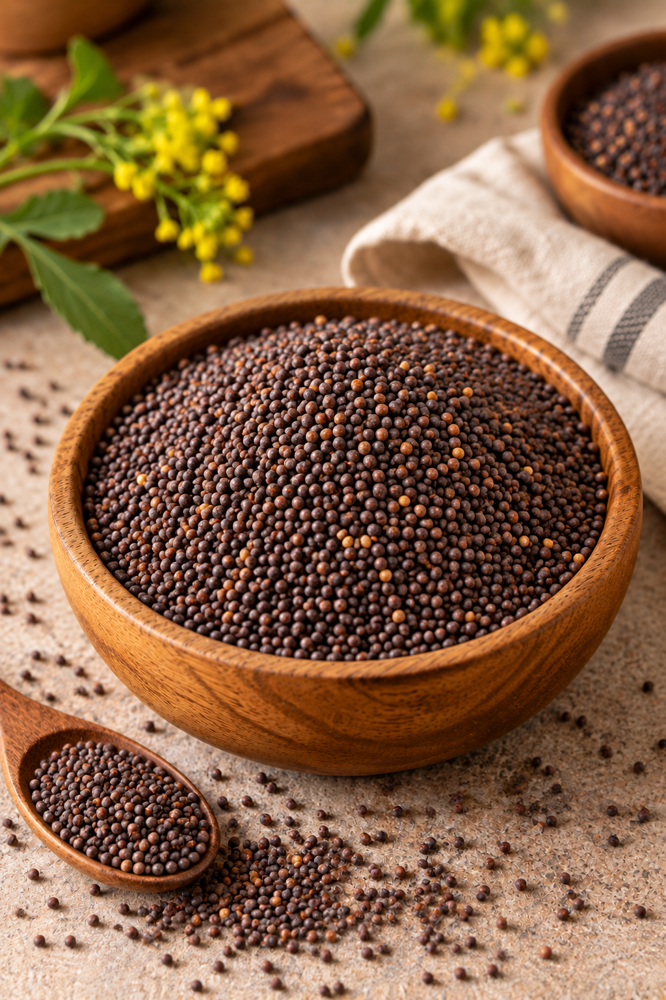

Khada Masala • Whole Spice
राई
🌿 Bold & Pungent
Dharoahar Mustard Seeds, traditionally known as Rai, are valued for their distinctive pungency, bold aroma and characteristic flavour. A staple of Indian kitchens, mustard seeds are widely used to create the aromatic foundation of tempering and traditional spice preparations.
When added to hot oil, mustard seeds begin to crackle and release their characteristic aroma. This simple tempering technique brings depth and warmth to dals, vegetables, curries and a wide range of everyday Indian dishes.
Mustard Seeds are also commonly used in pickles, chutneys, spice blends and regional preparations. Their bold character works particularly well alongside curry leaves, cumin, turmeric and other whole spices.
Whether used as part of a traditional tadka or incorporated into a more elaborate recipe, Rai adds a distinctive layer of flavour and aroma while retaining the character expected from a classic whole Indian spice.